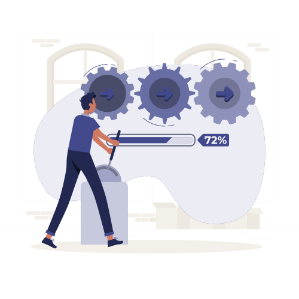

Your data. Your AI. Your control.
Assistants, agents and RAG solutions that work with your organisation's knowledge and applications, while respecting access rights and your sovereignty requirements.
What we do
Most AI pilots stall for a simple reason. The model cannot see the company's real information, or it sees information the user should not have access to.
We build the missing layer: connectors to where your content lives, reading of scanned and unstructured documents, retrieval that respects existing permissions, and agents embedded in your business processes.
To reach beyond documents (ERP, billing, ticketing), we expose your systems as governed tools through MCP servers. Integration becomes reusable and auditable.
If your data cannot leave your infrastructure, we deploy the whole stack locally: open-weight models on your GPUs, RAG orchestration, vector database and APIs inside your network boundary.
Technologies we use
Models & platforms
Integration
Data & retrieval
Development & infrastructure
Four building blocks from pilot to production
Most engagements combine two or three of them.
Enterprise RAG
Retrieval over your real documents: chunking tuned to each content type, hybrid search, re-ranking and source citation. Every answer respects existing access rights.
AI agents
Agents that call your business systems, execute approved actions and hand over to a human when unsure. Built with Copilot Studio or custom orchestration.
MCP & tool integration
Your applications, databases and APIs exposed as governed tools. An agent queries the ERP, billing or document repository through one auditable interface.
Document intelligence
OCR, automatic classification and field extraction that turn scanned contracts and unstructured files into usable business data.
Cloud AI, sovereign or hybrid
The architecture stays the same. You decide where the models run and where the data sits, and we have delivered each of these scenarios.
Cloud AI
Azure OpenAI and Microsoft 365 Copilot, with data governed inside your Microsoft tenant.
Sovereign on-premises
Open-weight models (DeepSeek, Llama, Mistral) served on your GPUs, under Kubernetes or OpenShift.
Hybrid
Sensitive corpora on local models, the rest on cloud AI, under one shared retrieval and routing layer.
Our team works with AI too
Our consultants use AI every day for code, tests, migration scripts, data analysis and documentation.
The result: more time spent on architecture, business logic and decisions that need human judgement. The agent and retrieval patterns we propose are the ones we run ourselves.
Where we apply it internally
- .NET, Angular, Power Platform and PowerShell code: generation, refactoring and review
- Automated tests and coverage analysis
- Migration and provisioning scripts
- Documentation produced during the build
- Requirements analysis and RFP responses
- Troubleshooting through log and telemetry analysis
How the engagement runs

- 01Frame
The decision or task the AI should improve
- 02Ground
Connect and prepare the documents
- 03Build
Retrieval, agents, tools and guardrails
- 04Evaluate
Accuracy, sources and permission testing
- 05Operate
Monitoring, feedback and continuous tuning
Where this applies
Employee knowledge assistant
Natural-language answers grounded in your policies, procedures and contracts, limited to each user's rights and with sources cited.
Contract and document review
Detection of risk clauses, inconsistencies and differences between versions. Extraction of obligations and deadlines before approval.
Operational agents
They query your systems through MCP, draft responses, prepare approvals and escalate to a human when unsure.
Control, designed in from the start
AI that cannot be audited does not last in a regulated business. These principles are part of every project.
Human in the loop
No consequential decision runs automatically. The AI speeds up the work, the professional decides and stays accountable.
Full traceability
Queries, sources retrieved, responses and actions are logged and reviewable.
Explainability
Every answer cites the extracts and references behind it, so it can be verified.
Granular access control
Separate roles for users, validators, administrators and auditors. Retrieval never returns content the user could not open directly.
AI plus business rules
Critical checks rely on deterministic rules alongside the model, to limit hallucinations.
Data quality
Templates, corpora and source repositories are governed, because retrieval is only as good as what it searches.
A sovereign AI platform for contract management
For a national telecom operator, we designed an AI platform for legal contract management that runs entirely on the client's local AI farm: on-premises LLMs, RAG orchestration and a vector database connected to the existing document repository, with no public cloud AI services.
If your sector requires data and inference to stay in-house, this architecture is already designed and proven.
Or browse all case studies in this domain.
Request an Assessment
A scoped working session with an architect to assess your use cases, your data and the infrastructure required.
Request an AssessmentBefore you ask
Yes. Our solutions connect to Microsoft 365 and your other sources while respecting your architecture and access rights. Nothing needs to be rebuilt to start.
Model Context Protocol is an open standard that exposes your systems and data to AI models as structured tools. An agent integrates once with your ERP or billing system, through a governed, versioned and auditable interface, instead of a bespoke integration per use case.
Yes, we have already done it. Open-weight models such as DeepSeek, Llama or Mistral run on your GPU servers, under Kubernetes or OpenShift, with vector database, RAG layer and APIs inside your network. Content and inference stay within your boundary.
It depends on model size, number of concurrent users and document volume. Configurations range from clustered RTX 6000 Ada GPUs for smaller workloads to A100 or H100 servers for larger corpora. Sizing is part of the assessment.
Not necessarily. Copilot is one option, a dedicated retrieval layer on Azure OpenAI is another, a fully local deployment a third. The choice depends on your documents, licensing, sovereignty requirements and use case. We can also advise on and supply the licences.